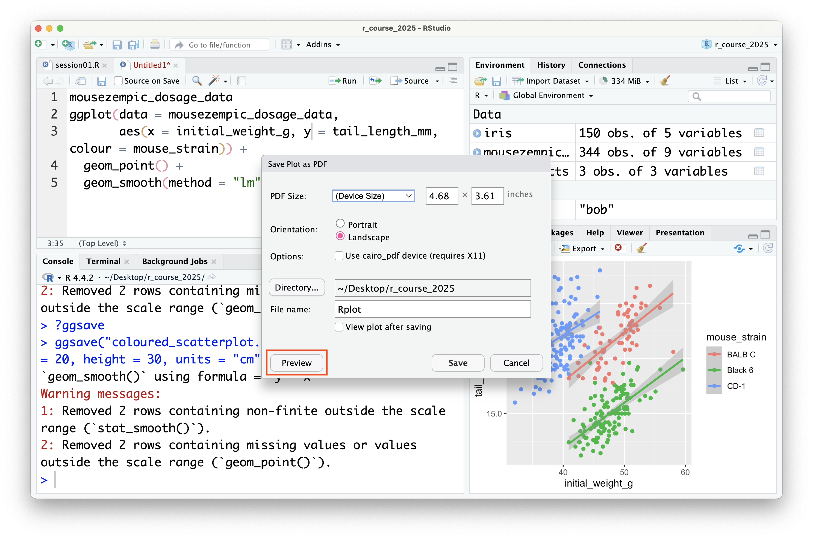
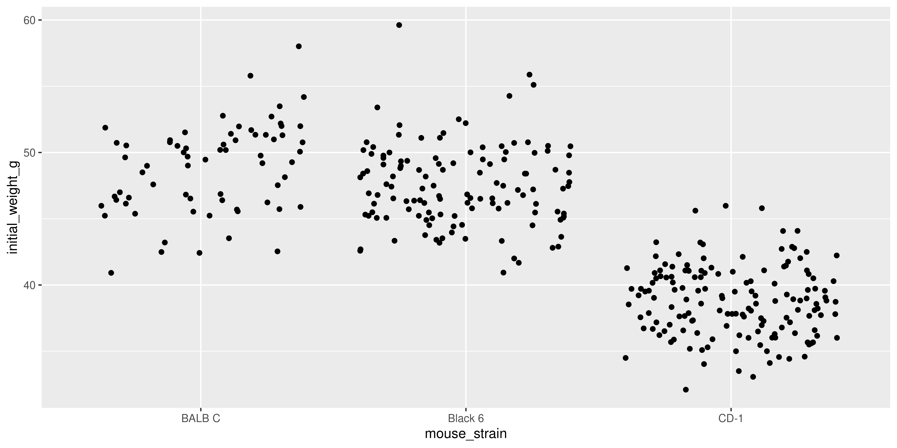
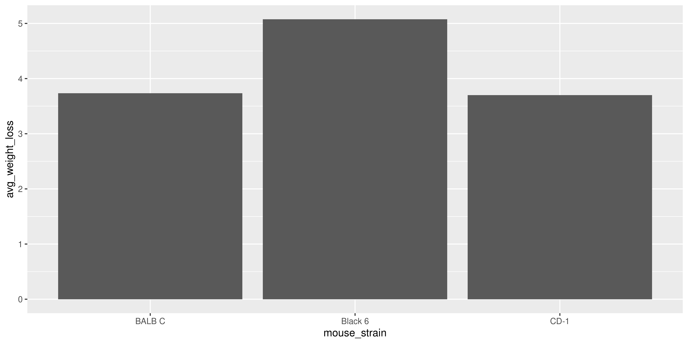

Rows: 344 Columns: 9
── Column specification ────────────────────────────────────────────────────────
Delimiter: ","
chr (4): mouse_strain, cage_number, replicate, sex
dbl (5): weight_lost_g, drug_dose_g, tail_length_mm, initial_weight_g, id_num
ℹ Use `spec()` to retrieve the full column specification for this data.
ℹ Specify the column types or set `show_col_types = FALSE` to quiet this message.
3.1 Building our first plot, layer by layer
Although R has a built-in plotting system, ggplot2 is a more powerful and flexible package for creating plots. The gg in ggplot2 stands for “Grammar of Graphics”, which is a way thinking about how each component of a plot (e.g. axes or colours) is part of the ‘language’ of data visualisation that allows you to compose complex plots piece by piece, just like you combine words to form sentences.
3.1.1 Initialisation
When making a ggplot, the first thing you need to do is initialise it with the ggplot() function. This function takes two arguments:
the data that you want to visualise (a dataframe/tibble), and
mapping, which describes the scales that will be used to display the data (e.g. which variable should be the x axis, which should be represented by colour, etc.)
The mapping is specified using the aes() function, which stands for ‘aesthetics’. It takes named arguments, where the names are the aesthetics you want to use to show your data (e.g. x, y, colour, shape, etc.) and the values are the names of the columns in your data that you want to use for those aesthetics.
For example, to make a plot to explore the relationship between the initial weight of the mice and their tail length, we would write:
ggplot(data = mousezempic_dosage_data, aes(x = initial_weight_g, y = tail_length_mm))
In the plot panel (bottom right hand corner), you should now see a blank plot with the x and y axes labelled with the column names we specified in the aes() function. There’s no data on it yet, because we haven’t told ggplot how to physically represent the data on the x and y scales we have specified.
3.1.2 Adding data
Data is represented in ggplot using geoms (short for ‘geometric objects’). A geom is a visual representation of the data in the plot, such as points, lines or bars. They are named geom_* where * is the type of geom you want to use. We will cover some of the most common geoms later in this session.
Geoms are added to plots layers (which are drawn on top of one another, like layers of a cake) using the + operator.
For example, let’s add points to the plot that we initialised above using geom_point():
ggplot(data = mousezempic_dosage_data, aes(x = initial_weight_g, y = tail_length_mm)) +geom_point()
Warning: Removed 2 rows containing missing values or values outside the scale range
(`geom_point()`).
This gives us a basic scatterplot of the data, with each point representing the tail length and initial weight of a mouse in our dataset.
Notice how we didn’t have to specify the data or mapping again when we added the geom_point() layer, because the data and mapping are inherited from the initial ggplot() function call. This is a common pattern in ggplot2: you only need to specify the data and mapping once, and it is used by all subsequent layers.
The plus + vs the pipe %>%
You might have noticed that + in ggplot works similarly to the pipe operator %>% in the dplyr package in that you place it at the end of a line of code, but + is only ever used in the context of plotting.
Don’t mix them up! A handy way to remember is that + looks a bit like the axes of a plot, so it’s what you should use when plotting.
3.1.3 Overlaying additional data
Of course, this is a very simple plot. To show more information, we can add additional layers using the + operator, or use additional aesthetics.
For example, let’s add a a layer containing a linear trendline using geom_smooth(method = "lm"):
Warning: Removed 2 rows containing non-finite outside the scale range
(`stat_smooth()`).
Warning: Removed 2 rows containing missing values or values outside the scale range
(`geom_point()`).
Here, we supplied the method = "lm" argument to geom_smooth() to tell it fit a linear model (lm for short) to the data and plot the line of best fit, surrounded by a 95% confidence interval. Most geoms will have additional arguments like this that you can use to customise their appearance. Remember that we can check the documentation for geoms and other functions using ?geom_smooth.
ggplot2 and missing values
You might have noticed that, along with the plot, R is also printing a warning message that lets us know that some rows of our data contain missing values. ggplot2 will automatically remove these rows from the plot (and warn you that it’s happening), but it’s always a good idea to check your data for missing values before plotting it, as they can affect the results of your analysis. Recall from last session that we can do this by combining the is.na() function with filter():
# find the rows of our data that contain missing values in the columns we're plottingmousezempic_dosage_data %>%filter(is.na(initial_weight_g), is.na(tail_length_mm))
# A tibble: 2 × 9
mouse_strain cage_number weight_lost_g replicate sex drug_dose_g
<chr> <chr> <dbl> <chr> <chr> <dbl>
1 CD-1 1A NA rep1 <NA> NA
2 Black 6 3E NA rep3 <NA> NA
# ℹ 3 more variables: tail_length_mm <dbl>, initial_weight_g <dbl>,
# id_num <dbl>
From here on, we will hide these warnings in the ebook so that it’s easier to read, but you’ll still see them if you run the code in your own R session.
We can also add additional aesthetics to the plot beyond just x and y. For example, let’s use the colour aesthetic to represent the strain of each mouse. To do this, we add colour = strain to the aes() function that describes the mapping in the ggplot() call:
Warning: Removed 2 rows containing non-finite outside the scale range
(`stat_smooth()`).
Warning: Removed 2 rows containing missing values or values outside the scale range
(`geom_point()`).
Not only are the points now coloured by the strain of each mouse, but there are now three separate colour-coded trendlines, one for each strain. This is because the aesthetic mapping we supply to the ggplot() function when initialising the plot is inherited by all subsequent layers/geoms.
Notice as well how adding colour to the plot totally changes the way we perceive the data! Without colour and just plotting a single trendline, it appeared that there was an overall negative association between initial weight and tail length, but we can now see that there is actually a positive association within each strain. This is an example of Simpson’s Paradox, and shows why it’s so important to visualise your data!
3.1.4 Saving plots as images
Once you’ve created a plot you’re happy with, you’ll probably want to save it to use in a paper or presentation. You can do this programmatically using the ggsave() function.
To use ggsave(), you need to specify:
the filename you want to save the plot as (e.g. "my_plot.png"),
the plot object you want to save (by default, this is the last plot you created, but you can specify a plot that’s been assigned to a variable),
the file type you want to save the plot as (e.g. device = "png"), and
the dimensions of the plot (e.g. width = 6, height = 4). Dimensions are in inches by default, but you can specify them in other units if you prefer by using the units argument (e.g. units = "cm")
For example, to save the last plot we created as a .png file with dimensions of 5 by 7 inches, we would write:
Or to save it as a .pdf file with dimensions of 20 by 30 cm:
ggsave("coloured_scatterplot.pdf", device ="pdf", width =20, height =30, units ="cm")
Generally, it’s good practice to assign the plot you want to save to a variable, and provide that variable to the ‘plot’ argument of ggsave(), rather than relying on the last plot you created. This makes it more clear what plot you’re saving, so that your code is more readable and reproducible.
# first assign the plot to a variablecolourful_scatterplot <-ggplot(data = mousezempic_dosage_data,aes(x = initial_weight_g, y = tail_length_mm, colour = mouse_strain)) +geom_point() +geom_smooth(method ="lm")# then save the plot: notice the 'plot' argumentggsave("coloured_scatterplot.pdf", plot = colourful_scatterplot, device ="pdf", width =20, height =30, units ="cm")
It’s also possible to save plots using the export button in the plot panel:
You can choose to save the plot either as an image:
In this case, you can set the file type and dimensions, and see a preview of the plot before saving it. Tip: it’s also possible to change the dimensions of the plot by dragging the bottom left of the preview window.
You can also save plots as a PDF: 
Although there is no preview for PDFs within RStudio itself, you can click the ‘preview’ button to open the PDF in your default PDF viewer.
In general, it’s preferable to save plots programmatically using ggsave() because it’s more reproducible (because if you ever change your plotting code or data, new plot files can be automatically generated), but the export button can be useful for quickly saving plots during exploratory data analysis (or use the ultimate lazy hack: just screenshot the plot panel!).
Practice exercises
Try these practice questions to test your understanding
1. Which of the following statements about the mapping in a ggplot is incorrect?
✗Mapping is specified using the aes() function
✔Mapping refers to the type of plot you want to create (e.g. scatterplot, line plot)
✗When you specify the mapping in the ggplot() function, it is inherited by all subsequent layers/geoms
✗Mapping allows you to specify which scales (e.g. x, y, colour) should be used to display the data
2. Which of the following lines of code is a valid way to create a scatterplot of the drug dosage (x) and weight loss (y) in the mousezempic_dosage_data dataset?
Mapping in ggplot refers to the scales that will be used to display the data (e.g. x, y, colour), not the type of plot you want to create. It is specified using the aes() function, and when specified in the initial ggplot() function call, is inherited by all subsequent layers/geoms.
The correct way to create a scatterplot of the drug dosage and weight loss in the mousezempic_dosage_data dataset is ggplot(data = mousezempic_dosage_data, aes(x = drug_dose_g, y = weight_lost_g)) + geom_point(). This specifies the data and mapping in the ggplot() function call, and adds a layer of points to the plot using geom_point(). The %>% operator is not used in ggplot2, and the x and y mapping should be specified within the aes() function. Also, remember that although ggplot2 is the name of the package, the function you use to initialise a plot is ggplot().
To programmatically save the plot created in question 2 as a .pdf file with dimensions of 10 by 15 cm, you would use the ggsave() function with the arguments ggsave("drug_dosage_vs_weight_loss.pdf", device = "pdf", width = 10, height = 15, units = "cm"). This specifies the filename, file type, dimensions, and units of the plot you want to save. Remember that by default, dimensions are in inches (boooo), so you need to specify the units as “cm” to save the plot with dimensions in centimetres.
3.2 Some commonly used geoms
ggplot2 has (as of writing) almost 50 different geoms that you can use to represent your data. You can see the full list in the ggplot2 documentation, but some of the most commonly used geoms include:
geom_point() for visualising individual data points
geom_density() and geom_histogram() for visualising the distribution of a continuous variable
geom_violin() and geom_boxplot() for visualising the distribution of a continuous variable across different categories
geom_bar() and geom_col() for making bar plots
geom_h/vline() for adding horizontal and vertical lines to a plot
In this section, we will briefly cover these geoms and how you might use them to visualise your data. It’s not designed to be an exhaustive list, but hopefully it will help you get started with some of the most common types of plots you might want to create.
How do I make a … plot in ggplot2?
Often, you might come across a specific type of plot you want to make that is a bit more complex than the basic geoms we’ve covered here. If you know the name of the plot you’re wanting to make, you can often find a tutorial/guide online by googling, or you could ask an AI assistant like ChatGPT. Particularly for specific types of data (e.g. clinical data, phylogenetic data), there are often field-specific packages that provide geoms or functions to make particular types of plots, like the ggtree package for phylogenetic trees or the survminer package for survival plots.
If the plot doesn’t have a specifc name, you can try to break it down by thinking about the geoms you might need to use to represent the data, or try uploading a picture of a similar plot to ChatGPT.
Whatever method you use, remember to add ‘ggplot2’ to your search query to get the most relevant results, as there are many different plotting packages in R!
3.2.1 Visualising individual data points: geom_point
Above, we saw how to use geom_point() to create a scatterplot, but geom_point() can be used in other ways too. For example, you can use it to create a dot plot, where the x axis is categorical and the y axis is continuous:
# make a dot plot of initial weight by mouse strainggplot(data = mousezempic_dosage_data, aes(x = mouse_strain, y = initial_weight_g)) +geom_point()
Notice how the points are stacked on top of one another for each strain. This is because the x axis is categorical, and ggplot2 doesn’t know how to spread the points out. This can make it difficult to see the individual points, so when making a plot like this it’s often useful to add the position = position_jitter() argument to geom_point():
# make a jittered dot plot of initial weight by mouse strainggplot(data = mousezempic_dosage_data, aes(x = mouse_strain, y = initial_weight_g)) +geom_point(position =position_jitter())

The position_jitter() function adds a small amount of random noise to the x axis position of each point, which helps to spread them out and make it easier to see the individual points. Like most functions in ggplot2, position_jitter() will try to guess an appropriate amount of jitter to add, but you can specify the amount as well:
# use less jitter so there is more distinction between the different mouse strainsggplot(data = mousezempic_dosage_data, aes(x = mouse_strain, y = initial_weight_g)) +geom_point(position =position_jitter(width =0.2))
The exact amount of jitter you need will depend heavily on your data, so it’s often a good idea to experiment with different amounts to see what works best.
Beeswarm plots
Another way to spread out points in a dot plot is to use a beeswarm plot, in which points are spread out slightly along the x axis so that they don’t overlap. The ggbeeswarm package provides a geom_beeswarm() function that you can use to create beeswarm plots in ggplot2 (rather than using geom_point(position = position_jitter()) like we did here). For more information, see the ggbeeswarm documentation.
Beyond just scatterplots and dot plots, geom_point() is also really useful to overlay additional data on top of other geoms. For example, you can use it to add individual data points to a boxplot or violin plot, as we will see shortly!
3.2.2 Visualising the distribution of a continuous variable: geom_histogram / geom_density
As the number of data points increases, it can be difficult to see individual points. In this case, it can be useful to visualise the distribution of a continuous variable using a histogram or density plot.
Histograms are created using the geom_histogram() function. Seeing as only a single variable is being plotted, you only need to specify the x aesthetic in the aes() function.
For example, let’s create a histogram of the initial weight of the mice:
One of the most important arguments to geom_histogram() is the bins argument, which specifies the number of bins (bars) to use for the histogram. By default, it is 30, but you might want a smaller or larger value depending on the distribution of your data. For example, let’s create a histogram with 15 bins:
Similarly to histograms, density plots are also used to visualise the distribution of a continuous variable, but they are smoothed out. To create a density plot in ggplot2, you can use the geom_density() function:
Notice how the density plot is smoothed out compared to the histogram, and it is also scaled so that the area under the curve is equal to 1. This means that the y axis of a density plot represents the probability density of the data, rather than the count of data points in each bin.
3.2.3 Visualising the distribution of a continuous variable across categories: geom_boxplot / geom_violin
Often in biological data, you will want to visualise the distribution of a continuous variable across different categories. For example, we might want to see how the initial weight of the mice varies by strain. Two plot types that are useful for this are boxplots and violin plots.
Boxplots allow you to easily see the median, quartiles, and any outliers in the data. To create a boxplot win ggplot2, you can use the geom_boxplot() function:
ggplot(data = mousezempic_dosage_data, aes(x = mouse_strain, y = initial_weight_g)) +geom_boxplot()
It can sometimes be nice to add points to a boxplot to show the individual data points as well as the summary statistics. You can do this by adding a geom_point() layer to the plot:
This plot shows the distribution of initial weight for each strain (with the boxplot), as well as the individual data points. Notice how the points are jittered to avoid overlapping, as we did earlier with the dot plot.
However, when you have a lot of data points (as we do here), a boxplot with overlaid points can be a bit messy and hard to read. In this case, it might be better to use a violin plot instead, which shows the distribution of the data as a density plot:
ggplot(data = mousezempic_dosage_data, aes(x = mouse_strain, y = initial_weight_g)) +geom_violin()
You can even combine geom_violin() with geom_boxplot() to show both the distribution of the data and the summary statistics:
Notice how we specified the width argument in geom_boxplot() to make the boxplot narrower, so that it doesn’t obscure the violin plot.
3.2.4 geom_bar / geom_col
The last pair of basic geoms we’ll cover are geom_bar() and geom_col(), which are used to create bar plots. These are handy for visualising categorical data, such as the number of mice in each strain or the average weight loss for each dosage.
geom_bar() is used to create bar plots from counts of categorical data, while geom_col() is used to create bar plots from pre-computed values. This means that if you have already calculated the counts or averages for each category, you should use geom_col() instead of geom_bar().
For example, if we wanted to create a bar plot of the number of mice in each strain with geom_col(), we would first need to calculate the counts for each strain:
# first count the number of mice per strainmouse_counts <- mousezempic_dosage_data %>%group_by(mouse_strain) %>%summarise(count =n())# then create the bar plotggplot(data = mouse_counts,aes(x = mouse_strain, y = count)) +geom_col()
Whereas if we used geom_bar(), we would not need to calculate the counts first:
Notice how we only specified the x aesthetic in the aes() function, and geom_bar() automatically calculated the counts for each strain.
The advantage of using geom_bar() is that it is simpler and easier to read for plotting counts, but it can’t be used for plotting pre-computed values. For example, if you wanted to plot the average weight loss for each strain, you would need to calculate the averages first with the dplyr functions we learned in Chapter 2 and use geom_col():
# first calculate the average weight loss for each strainmouse_avg_weight_loss <- mousezempic_dosage_data %>%group_by(mouse_strain) %>%summarise(avg_weight_loss =mean(weight_lost_g))# then create the bar plotggplot(data = mouse_avg_weight_loss,aes(x = mouse_strain, y = avg_weight_loss)) +geom_col()
Warning: Removed 2 rows containing missing values or values outside the scale range
(`geom_col()`).

3.2.5 geom_hline / geom_vline
The geom_hline() and geom_vline() functions are used to add horizontal and vertical lines to a plot, respectively. Although you’ll probably never use them alone, they are great to add to your plots to highlight specific values or thresholds in your data. To use them, you need to specify the yintercept (for geom_hline()) or xintercept (for geom_vline()) argument, which specifies where to draw the line.
For example, let’s add a horizontal line to our scatterplot of drug dosage and weight loss at the 4g mark, which might represent a clinically significant amount of weight loss:
Notice how adding this line extends the x axis to include 0.0025, even though there are no data points at that value. This is because, by default, ggplot2 chooses axes limits for you that include all the data and any additional layers you add to the plot.
Practice exercises
Try these practice questions to test your understanding
1. Which geom could you use to create a boxplot?
✔geom_boxplot()
✗geom_box()
✗geom_col()
✗geom_violin()
2. Which of the following lines of code is a valid way to create a violin plot of the tail length of the mice by strain, with points overlaid?
✗Makes a box plot of the number of mice in each cage, with a horizontal line at 60.
✗Makes a bar plot of the number of cages in the dataset, with a horizontal line at 60.
✔Makes a bar plot of the number of mice in each cage, with a horizontal line at 60.
✗Makes a bar plot of the number of mice in each cage
Solutions
The correct answer is geom_boxplot(). This is the function used to create boxplots in ggplot2.
The correct way to create a violin plot of the tail length of the mice by strain, with points overlaid, is ggplot(data = mousezempic_dosage_data, aes(x = mouse_strain, y = tail_length_mm)) + geom_violin() + geom_point(position = position_jitter(width = 0.2)). This specifies the data and mapping in the ggplot() function call, adds a layer of violin plots using geom_violin(), and then adds a layer of points using geom_point() with jittered positions to avoid overlapping.
The code creates a bar plot of the number of mice in each cage, with a horizontal line at 60. The geom_bar() function counts the number of mice in each cage and plots the counts as bars, while the geom_hline() function adds a horizontal line at the y value of 60. This could be used to show a threshold e.g. for the maximum number of mice allowed in a cage.
3.3 Aesthetics and scales
Now that we’ve learned some of the common geoms we can use to physically represent our data, let’s discuss the aesthetics that govern how these geoms look and the scales that map our data to these aesthetics.
3.3.1 Aesthetics
As described earlier, aesthetics are the visual properties of the geoms that we can control, such as colour, position, size and shape. We saw how the colour aesthetic could be used in all layers of the plot to show the strain of each mouse, by specifying colour = mouse_strain in the aes() function:
Warning: Removed 2 rows containing non-finite outside the scale range
(`stat_smooth()`).
Warning: Removed 2 rows containing missing values or values outside the scale range
(`geom_point()`).
It’s also possible to specify aesthetics for specific geoms, rather than for the whole plot. For example, let’s say we wanted to colour the points by mouse strain, but just have a single trendline for all of the data (rather than one for each strain, like we have above). We could do this by specifying the colour aesthetic in the geom_point() layer, rather than in the ggplot() function:
Notice how the outline of the boxplot is coloured by strain, but the fill is not. For geoms that show an area of some sort (like boxplots, histograms, violin plots or bar charts), they have both a colour aesthetic that controls the colour of the outline of the shape, and a fill aesthetic that controls the fill colour. So if we wanted the boxplot to be filled with the colour of the strain, we should use the fill aesthetic instead:
ggplot(data = mousezempic_dosage_data,aes(x = mouse_strain, y = tail_length_mm, fill = mouse_strain)) +geom_boxplot()
You can see all of the aesthetics that a geom accepts by checking its help page (e.g. ?geom_boxplot) and reading the “Aesthetics” section.
3.3.2 Combining multiple aesthetics
Notice how in the last example, we used mapped the same variable (mouse_strain) to both the x and fill aesthetics. It’s often helpful to show the same variable through multiple aesthetics, as it can convey the information more clearly. As another example, for the scatterplot example we used earlier, we could also use the shape aesthetic to show the strain of each mouse:
Now we can see the strain of each mouse through both colour and shape, which makes it even easier to distinguish between the different strains.
Of course, we may instead want to use aesthetics to add additional variables to our visualisation. To illustrate this, let’s make a scatterplot that visualises the initial weight and tail length of each mouse, but also shows the drug dosage, cage number and mouse strain:
Looks pretty crazy right? There’s no limit to the number of aesthetics you can use in a single plot, but it’s important to remember that the more aesthetics you add, the harder it is to interpret. Try to keep it simple and only add aesthetics that are necessary to convey key information.
3.3.3 Scales
Scales control how particular data values/variables are mapped to aesthetics. For example, when we specify colour = mouse_strain, ggplot2 automatically chooses a colour palette to use for each strain. Scales are specified using the scale_* functions, where * is the name of the aesthetic you want to control (e.g. scale_colour, scale_size, etc.) and the arguments control how data will be visually represented e.g. the colour palette used for the colour aesthetic, or the range of size of the points for the size aesthetic.
3.3.3.1 Colours
One thing you’ll often want to do is change the colour palette. You can do this manually, using either the scale_colour_manual() function (for categorical variables) or the scale_colour_gradient() function (for continuous variables). For example, if we wanted to use a different colour palette for the mouse strains in our scatterplot, we would use scale_colour_manual() as follows:
When using scale_colour_manual(), you need to provide to the values argument a vector of colours that matches the number of levels in the variable you’re mapping to colour. In the example above, we have three mouse strains, so we need to provide three colours in the values argument.
R has a range of built-in colours that you can use, such as “red”, “blue”, “green”, etc., but you can also use hex codes to specify colours:
To help you see the colours you’re using, RStudio will highlight the colour names and hex codes when you type them in your R script panel:
RStudio colour highlighting
If it doesn’t do this automatically, you can turn it on by going to Tools > Global Options > Code > Display and checking the “Enable preview of named and hexadecimal colours” option.
So far, we’ve only used colour to visualise categorical variables, but it can also be used to visualise continuous variables. As an example, let’s colour each point in our scatterplot of initial weight and tail length by the drug dosage:
The points are now coloured based on the drug dosage, using a default gradient of blue colours. You can change the colour of the gradient using the scale_colour_gradient() function, which allows you to specify the colours to use for the low and high ends of the gradient:
ggplot(data = mousezempic_dosage_data,aes(x = initial_weight_g, y = tail_length_mm, colour = drug_dose_g)) +geom_point() +scale_colour_gradient(low ="yellow", high ="red")
We now have a gradient from yellow to red.
Instead of specifying colours manually, there are also a range of pre-defined colour palettes you can use, such as scale_colour_brewer() or scale_colour_viridis(). Check out their help pages to learn more about them, or try the paleteer package for a huge range of other pre-defined colour palettes.
3.3.3.2 The x and y axes
Scales are also used to control the x and y axes. In particular, it can be handy to specify the limits of the axes, or to apply some sort of transformation to the data.
By default, ggplot2 will automatically choose the limits of the x and y axes based on the data you provide. For example, look at the scatterplots of initial weight and tail length we created earlier, and you’ll see that the origin (0,0) is not shown because there are no data points near there. If we wanted to, we could change the limits of the axes using the xlim() and ylim() functions to include the origin:
ggplot(data = mousezempic_dosage_data, aes(x = initial_weight_g, y = tail_length_mm)) +geom_point() +# specify axis limits like xlim(min, max)xlim(0, 60) +# if we want to use the automatic limit, use NA instead of a max valueylim(0, NA)
Notice how different this makes the plot look! Choosing appropriate axis limits is important for accurately conveying the data, so it’s worth spending some time thinking about what limits to use.
By default, ggplot2 uses a linear scale for both axes, but you can change this to a logarithmic scale using the scale_x_log10() or scale_y_log10() functions. This is useful when you have data that spans several orders of magnitude.
We don’t have anything like this in our mousezempic_dosage_data dataset, so let’s use the diamonds dataset that comes with ggplot2 to demonstrate this. The diamonds dataset contains information about the price and carat weight of diamonds, both of which are continuous variables that span several orders of magnitude. Let’s create a scatterplot of the price and carat of the diamonds:
ggplot(diamonds, aes(y = price, x = carat)) +geom_point()
To linearise this relationship, we can apply a log10 transformation to the x and y axes using the scale_x_log10() and scale_y_log10() functions:
ggplot(diamonds, aes(y = price, x = carat)) +geom_point()+scale_x_log10() +scale_y_log10()
Notice how the points are now more evenly distributed across the plot, and we can see the relationship between carat and price more clearly.
3.3.4 Positions
Positions aren’t really an aesthetic, but they are a way to control how geoms are displayed, particularly when parts of that geom overlap. We saw the position argument earlier in the geom_point() function, where we used position = position_jitter() to spread out the points in a dot plot. This is a common use of the position argument, but there are other ways it is helpful too.
For example, when we are using geom_bar() to create a bar plot that is coloured by a categorical variable, the bars will be stacked on top of each other by default. Let’s illustrate this by creating a bar plot of the number of mice in each strain, coloured by the sex of the mouse:
ggplot(data = mousezempic_dosage_data,aes(x = mouse_strain, fill = sex)) +geom_bar()
Having the bars stacked up is useful when you want to see the total count for each strain, but it can make it difficult to see the individual counts for sex. Instead, we can use the position = "dodge" argument in geom_bar() to place the bars side by side:
ggplot(data = mousezempic_dosage_data,aes(x = mouse_strain, fill = sex)) +geom_bar(position ="dodge")
Notice how there is now a bar for each sex in each strain, and it’s easier to examine the sex distribution of each strain (but equally harder to appreciate the total number of mice in each strain!). There’s no right or wrong way to lay out the bars, but it’s worth trying both and seeing which one works best for the message you want to convey.
3.4 Making a plot pretty
Now that we’ve covered the basics of creating plots in ggplot2, let’s talk about how to make them look good (because so far, the ones we’ve made have been a little plain looking!)
There are countless ways to customise the appearance of a plot in ggplot2, and we’ll cover some of the most common ones here.
3.4.1 Labels and text
adding title, axis labels
changing size etc to be readable
how to remove scientific notation on axes
3.4.2 Themes
introduce concept of themes
how to modify parts of themes
3.4.3 Changing colours/sizes/shapes
exactly what it sounds like
mention about
3.4.4 Legends
changing position, removing it
3.5 Making many similar plots with facets
Faceting is a powerful way to create multiple plots that each show subsets of your data. This is useful when you want to compare different groups or categories. For example, we might want to create a scatterplot of initial weight and tail length for each strain of mouse in our dataset.
how to facet with facet_wrap() and scales = “free” or not
3.6 Laying out multiple plots into a single figure
combining plots with patchwork
3.7 Summary
Useful packages that extend ggplot2
There are many packages that extend the functionality of ggplot2, such as:
there are also a wealth of extensions to ggplot2 that provide additional geoms or functionality for specific types of data or plots, such as…
3.7.1 Practice questions
Source Code
---filters: - naquizformat: html: toc: true toc-location: left toc-title: "In this session:"---# Session 3: Plotting with ggplot2 {#sec-session03}In this session we will learn how to create and customise plots using the `ggplot2` package.::: {.callout-tip title="Learning Objectives"}At the end of this session, learners should be able to:1. Create a ggplot and save it for use outside of R2. Describe some of the common ways we can change the appearance of a plot, such as themes, legends and colours.3. List some of the common geoms available in ggplot2 and what types of data they might be useful for4. Use the `facet_wrap` function to create a series of similar plots5. Understand how to use the `patchwork` package to compose multiple plots together into a single figure:::To get started, let's load the `tidyverse` package, which includes `ggplot2`:```{r}library(tidyverse)```And read in the `mousezempic_dosage_data` that we have been using in previous sessions:```{r}mousezempic_dosage_data <-read_csv("data/mousezempic_dosage_data.csv")```## Building our first plot, layer by layerAlthough R has a built-in plotting system, `ggplot2` is a more powerful and flexible package for creating plots. The `gg` in `ggplot2` stands for "Grammar of Graphics", which is a way thinking about how each component of a plot (e.g. axes or colours) is part of the 'language' of data visualisation that allows you to compose complex plots piece by piece, just like you combine words to form sentences.### InitialisationWhen making a ggplot, the first thing you need to do is initialise it with the `ggplot()` function. This function takes two arguments:- the **data** that you want to visualise (a dataframe/tibble), and- **mapping**, which describes the scales that will be used to display the data (e.g. which variable should be the x axis, which should be represented by colour, etc.)The mapping is specified using the `aes()` function, which stands for 'aesthetics'. It takes named arguments, where the names are the aesthetics you want to use to show your data (e.g. `x`, `y`, `colour`, `shape`, etc.) and the values are the names of the columns in your data that you want to use for those aesthetics.For example, to make a plot to explore the relationship between the initial weight of the mice and their tail length, we would write:```{r}ggplot(data = mousezempic_dosage_data, aes(x = initial_weight_g, y = tail_length_mm))```In the plot panel (bottom right hand corner), you should now see a blank plot with the x and y axes labelled with the column names we specified in the `aes()` function. There's no data on it yet, because we haven't told ggplot how to physically represent the data on the x and y scales we have specified.### Adding dataData is represented in ggplot using **geoms** (short for 'geometric objects'). A geom is a visual representation of the data in the plot, such as points, lines or bars. They are named `geom_*` where `*` is the type of geom you want to use. We will cover some of the most common geoms later in this session.Geoms are added to plots layers (which are drawn on top of one another, like layers of a cake) using the `+` operator.For example, let's add points to the plot that we initialised above using `geom_point()`:```{r}ggplot(data = mousezempic_dosage_data, aes(x = initial_weight_g, y = tail_length_mm)) +geom_point()```This gives us a basic scatterplot of the data, with each point representing the tail length and initial weight of a mouse in our dataset.Notice how we didn't have to specify the data or mapping again when we added the `geom_point()` layer, because the data and mapping are inherited from the initial `ggplot()` function call. This is a common pattern in ggplot2: you only need to specify the data and mapping once, and it is used by all subsequent layers.::: {.callout-note title="The plus `+` vs the pipe `%>%`"}You might have noticed that `+` in ggplot works similarly to the pipe operator `%>%` in the `dplyr` package in that you place it at the end of a line of code, but **`+` is only ever used in the context of plotting.**Don't mix them up! A handy way to remember is that `+` looks a bit like the axes of a plot, so it's what you should use when plotting.:::### Overlaying additional dataOf course, this is a very simple plot. To show more information, we can add additional layers using the `+` operator, or use additional aesthetics.For example, let's add a a layer containing a linear trendline using `geom_smooth(method = "lm")`:```{r}ggplot(data = mousezempic_dosage_data, aes(x = initial_weight_g, y = tail_length_mm)) +geom_point() +geom_smooth(method ="lm")```Here, we supplied the `method = "lm"` argument to `geom_smooth()` to tell it fit a linear model (lm for short) to the data and plot the line of best fit, surrounded by a 95% confidence interval. Most geoms will have additional arguments like this that you can use to customise their appearance. Remember that we can check the documentation for geoms and other functions using `?geom_smooth`.::: {.callout-note title="ggplot2 and missing values"}You might have noticed that, along with the plot, R is also printing a warning message that lets us know that some rows of our data contain missing values. ggplot2 will automatically remove these rows from the plot (and warn you that it's happening), but it's always a good idea to check your data for missing values before plotting it, as they can affect the results of your analysis. Recall from last session that we can do this by combining the `is.na()` function with `filter()`:```{r}# find the rows of our data that contain missing values in the columns we're plottingmousezempic_dosage_data %>%filter(is.na(initial_weight_g), is.na(tail_length_mm))```From here on, we will hide these warnings in the ebook so that it's easier to read, but you'll still see them if you run the code in your own R session.:::We can also add additional aesthetics to the plot beyond just `x` and `y`. For example, let's use the `colour` aesthetic to represent the strain of each mouse. To do this, we add `colour = strain` to the `aes()` function that describes the mapping in the `ggplot()` call:```{r}ggplot(data = mousezempic_dosage_data,aes(x = initial_weight_g, y = tail_length_mm, colour = mouse_strain)) +geom_point() +geom_smooth(method ="lm")```Not only are the points now coloured by the strain of each mouse, but there are now three separate colour-coded trendlines, one for each strain. This is because the aesthetic mapping we supply to the `ggplot()` function when initialising the plot is inherited by **all** subsequent layers/geoms.Notice as well how adding colour to the plot totally changes the way we perceive the data! Without colour and just plotting a single trendline, it appeared that there was an overall negative association between initial weight and tail length, but we can now see that there is actually a positive association within each strain. This is an example of [Simpson's Paradox](https://en.wikipedia.org/wiki/Simpson%27s_paradox), and shows why it's so important to visualise your data!### Saving plots as imagesOnce you've created a plot you're happy with, you'll probably want to save it to use in a paper or presentation. You can do this programmatically using the `ggsave()` function.To use `ggsave()`, you need to specify:- the filename you want to save the plot as (e.g. `"my_plot.png"`),- the plot object you want to save (by default, this is the last plot you created, but you can specify a plot that's been assigned to a variable),- the file type you want to save the plot as (e.g. `device = "png"`), and- the dimensions of the plot (e.g. `width = 6, height = 4`). Dimensions are in inches by default, but you can specify them in other units if you prefer by using the units argument (e.g. `units = "cm"`)For example, to save the last plot we created as a .png file with dimensions of 5 by 7 inches, we would write:```{r}#| eval: falseggsave("coloured_scatterplot.png", device ="png", width =5, height =7)```Or to save it as a .pdf file with dimensions of 20 by 30 cm:```{r}#| eval: falseggsave("coloured_scatterplot.pdf", device ="pdf", width =20, height =30, units ="cm")```Generally, it's good practice to assign the plot you want to save to a variable, and provide that variable to the 'plot' argument of `ggsave()`, rather than relying on the last plot you created. This makes it more clear what plot you're saving, so that your code is more readable and reproducible.```{r}#| eval: false# first assign the plot to a variablecolourful_scatterplot <-ggplot(data = mousezempic_dosage_data,aes(x = initial_weight_g, y = tail_length_mm, colour = mouse_strain)) +geom_point() +geom_smooth(method ="lm")# then save the plot: notice the 'plot' argumentggsave("coloured_scatterplot.pdf", plot = colourful_scatterplot, device ="pdf", width =20, height =30, units ="cm")```It's also possible to save plots using the export button in the plot panel: You can choose to save the plot either as an image: In this case, you can set the file type and dimensions, and see a preview of the plot before saving it. Tip: it's also possible to change the dimensions of the plot by dragging the bottom left of the preview window.You can also save plots as a PDF: Although there is no preview for PDFs within RStudio itself, you can click the 'preview' button to open the PDF in your default PDF viewer.In general, it's preferable to save plots programmatically using `ggsave()` because it's more reproducible (because if you ever change your plotting code or data, new plot files can be automatically generated), but the export button can be useful for quickly saving plots during exploratory data analysis (or use the ultimate lazy hack: just screenshot the plot panel!).::: {.callout-important title="Practice exercises"}Try these practice questions to test your understanding::: question1\. Which of the following statements about the mapping in a ggplot is **incorrect**?::: choices::: choiceMapping is specified using the `aes()` function:::::: {.choice .correct-choice}Mapping refers to the type of plot you want to create (e.g. scatterplot, line plot):::::: choiceWhen you specify the mapping in the `ggplot()` function, it is inherited by all subsequent layers/geoms:::::: choiceMapping allows you to specify which scales (e.g. x, y, colour) should be used to display the data:::::::::::: question2\. Which of the following lines of code is a valid way to create a scatterplot of the drug dosage (x) and weight loss (y) in the `mousezempic_dosage_data` dataset?::: choices::: choice`ggplot(data = mousezempic_dosage_data, aes(x = drug_dose_g, y = weight_lost_g)) %>% geom_point()`:::::: choice`ggplot(data = mousezempic_dosage_data, x = drug_dose_g, y = weight_lost_g) + geom_point()`:::::: choice`ggplot2(data = mousezempic_dosage_data, aes(x = drug_dose_g, y = weight_lost_g))`:::::: {.choice .correct-choice}`ggplot(data = mousezempic_dosage_data, aes(x = drug_dose_g, y = weight_lost_g)) + geom_point()`:::::::::::: question3. How could you programmatically save the plot created in question 2 as a .pdf file with dimensions of 10 by 15 cm?::: choices::: {.choice .correct-choice}`ggsave("drug_dosage_vs_weight_loss.pdf", device = "pdf", width = 10, height = 15, units = "cm")`:::::: choice`save("drug_dosage_vs_weight_loss.pdf", device = "pdf", width = 10, height = 15, units = "cm")`:::::: choice`ggsave("drug_dosage_vs_weight_loss.pdf", device = "pdf", width = 10, height = 15)`:::::: choice`ggsave("drug_dosage_vs_weight_loss.pdf", width = 10, height = 15)`:::::::::<details><summary>Solutions</summary>1. Mapping in ggplot refers to the scales that will be used to display the data (e.g. x, y, colour), not the type of plot you want to create. It is specified using the `aes()` function, and when specified in the initial `ggplot()` function call, is inherited by all subsequent layers/geoms.2. The correct way to create a scatterplot of the drug dosage and weight loss in the `mousezempic_dosage_data` dataset is `ggplot(data = mousezempic_dosage_data, aes(x = drug_dose_g, y = weight_lost_g)) + geom_point()`. This specifies the data and mapping in the `ggplot()` function call, and adds a layer of points to the plot using `geom_point()`. The `%>%` operator is not used in ggplot2, and the `x` and `y` mapping should be specified within the `aes()` function. Also, remember that although ggplot2 is the name of the package, the function you use to initialise a plot is `ggplot()`.3. To programmatically save the plot created in question 2 as a .pdf file with dimensions of 10 by 15 cm, you would use the `ggsave()` function with the arguments `ggsave("drug_dosage_vs_weight_loss.pdf", device = "pdf", width = 10, height = 15, units = "cm")`. This specifies the filename, file type, dimensions, and units of the plot you want to save. Remember that by default, dimensions are in inches (boooo), so you need to specify the units as "cm" to save the plot with dimensions in centimetres.</details>:::## Some commonly used geomsggplot2 has (as of writing) almost 50 different geoms that you can use to represent your data. You can see the full list in the [ggplot2 documentation](https://ggplot2.tidyverse.org/reference/#geoms), but some of the most commonly used geoms include:- `geom_point()` for visualising individual data points- `geom_density()` and `geom_histogram()` for visualising the distribution of a continuous variable- `geom_violin()` and `geom_boxplot()` for visualising the distribution of a continuous variable **across different categories**- `geom_bar()` and `geom_col()` for making bar plots- `geom_h/vline()` for adding horizontal and vertical lines to a plotIn this section, we will briefly cover these geoms and how you might use them to visualise your data. It's not designed to be an exhaustive list, but hopefully it will help you get started with some of the most common types of plots you might want to create.::: {.callout-note title="How do I make a ... plot in ggplot2?"}Often, you might come across a specific type of plot you want to make that is a bit more complex than the basic geoms we've covered here. If you know the name of the plot you're wanting to make, you can often find a tutorial/guide online by googling, or you could ask an AI assistant like ChatGPT. Particularly for specific types of data (e.g. clinical data, phylogenetic data), there are often field-specific packages that provide geoms or functions to make particular types of plots, like the [ggtree package](https://yulab-smu.top/treedata-book/index.html) for phylogenetic trees or the [survminer package](https://rpkgs.datanovia.com/survminer/) for survival plots.If the plot doesn't have a specifc name, you can try to break it down by thinking about the geoms you might need to use to represent the data, or try uploading a picture of a similar plot to ChatGPT.Whatever method you use, remember to add 'ggplot2' to your search query to get the most relevant results, as there are many different plotting packages in R!:::### Visualising individual data points: geom_pointAbove, we saw how to use `geom_point()` to create a scatterplot, but `geom_point()` can be used in other ways too. For example, you can use it to create a dot plot, where the x axis is categorical and the y axis is continuous:```{r}#| warning: false# make a dot plot of initial weight by mouse strainggplot(data = mousezempic_dosage_data, aes(x = mouse_strain, y = initial_weight_g)) +geom_point()```Notice how the points are stacked on top of one another for each strain. This is because the x axis is categorical, and ggplot2 doesn't know how to spread the points out. This can make it difficult to see the individual points, so when making a plot like this it's often useful to add the `position = position_jitter()` argument to `geom_point()`:```{r}#| warning: false# make a jittered dot plot of initial weight by mouse strainggplot(data = mousezempic_dosage_data, aes(x = mouse_strain, y = initial_weight_g)) +geom_point(position =position_jitter())```The `position_jitter()` function adds a small amount of random noise to the x axis position of each point, which helps to spread them out and make it easier to see the individual points. Like most functions in ggplot2, `position_jitter()` will try to guess an appropriate amount of jitter to add, but you can specify the amount as well:```{r}#| warning: false# use less jitter so there is more distinction between the different mouse strainsggplot(data = mousezempic_dosage_data, aes(x = mouse_strain, y = initial_weight_g)) +geom_point(position =position_jitter(width =0.2))```The exact amount of jitter you need will depend heavily on your data, so it's often a good idea to experiment with different amounts to see what works best.::: {.callout-note title="Beeswarm plots"}Another way to spread out points in a dot plot is to use a beeswarm plot, in which points are spread out slightly along the x axis so that they don't overlap. The `ggbeeswarm` package provides a `geom_beeswarm()` function that you can use to create beeswarm plots in ggplot2 (rather than using `geom_point(position = position_jitter())` like we did here). For more information, see the [ggbeeswarm documentation](https://github.com/eclarke/ggbeeswarm/blob/main/README.md).:::Beyond just scatterplots and dot plots, `geom_point()` is also really useful to overlay additional data on top of other geoms. For example, you can use it to add individual data points to a boxplot or violin plot, as we will see shortly!### Visualising the distribution of a continuous variable: geom_histogram / geom_densityAs the number of data points increases, it can be difficult to see individual points. In this case, it can be useful to visualise the distribution of a continuous variable using a histogram or density plot.Histograms are created using the `geom_histogram()` function. Seeing as only a single variable is being plotted, you only need to specify the `x` aesthetic in the `aes()` function.For example, let's create a histogram of the initial weight of the mice:```{r}#| warning: falseggplot(data = mousezempic_dosage_data, aes(x = initial_weight_g)) +geom_histogram()```One of the most important arguments to `geom_histogram()` is the `bins` argument, which specifies the number of bins (bars) to use for the histogram. By default, it is 30, but you might want a smaller or larger value depending on the distribution of your data. For example, let's create a histogram with 15 bins:```{r}#| warning: falseggplot(data = mousezempic_dosage_data, aes(x = initial_weight_g)) +geom_histogram(bins =15)```Similarly to histograms, density plots are also used to visualise the distribution of a continuous variable, but they are smoothed out. To create a density plot in ggplot2, you can use the `geom_density()` function:```{r}#| warning: falseggplot(data = mousezempic_dosage_data, aes(x = initial_weight_g)) +geom_density()```Notice how the density plot is smoothed out compared to the histogram, and it is also scaled so that the area under the curve is equal to 1. This means that the y axis of a density plot represents the probability density of the data, rather than the count of data points in each bin.### Visualising the distribution of a continuous variable across categories: geom_boxplot / geom_violinOften in biological data, you will want to visualise the distribution of a continuous variable across different categories. For example, we might want to see how the initial weight of the mice varies by strain. Two plot types that are useful for this are boxplots and violin plots.Boxplots allow you to easily see the median, quartiles, and any outliers in the data. To create a boxplot win ggplot2, you can use the `geom_boxplot()` function:```{r}#| warning: falseggplot(data = mousezempic_dosage_data, aes(x = mouse_strain, y = initial_weight_g)) +geom_boxplot()```It can sometimes be nice to add points to a boxplot to show the individual data points as well as the summary statistics. You can do this by adding a `geom_point()` layer to the plot:```{r}#| warning: falseggplot(data = mousezempic_dosage_data, aes(x = mouse_strain, y = initial_weight_g)) +geom_boxplot() +geom_point(position =position_jitter(width =0.2))```This plot shows the distribution of initial weight for each strain (with the boxplot), as well as the individual data points. Notice how the points are jittered to avoid overlapping, as we did earlier with the dot plot.However, when you have a lot of data points (as we do here), a boxplot with overlaid points can be a bit messy and hard to read. In this case, it might be better to use a violin plot instead, which shows the distribution of the data as a density plot:```{r}#| warning: falseggplot(data = mousezempic_dosage_data, aes(x = mouse_strain, y = initial_weight_g)) +geom_violin()```You can even combine `geom_violin()` with `geom_boxplot()` to show both the distribution of the data and the summary statistics:```{r}#| warning: falseggplot(data = mousezempic_dosage_data, aes(x = mouse_strain, y = initial_weight_g)) +geom_violin() +geom_boxplot(width =0.1)```Notice how we specified the `width` argument in `geom_boxplot()` to make the boxplot narrower, so that it doesn't obscure the violin plot.### geom_bar / geom_colThe last pair of basic geoms we'll cover are `geom_bar()` and `geom_col()`, which are used to create bar plots. These are handy for visualising categorical data, such as the number of mice in each strain or the average weight loss for each dosage.`geom_bar()` is used to create bar plots from counts of categorical data, while `geom_col()` is used to create bar plots from pre-computed values. This means that if you have already calculated the counts or averages for each category, you should use `geom_col()` instead of `geom_bar()`.For example, if we wanted to create a bar plot of the number of mice in each strain with `geom_col()`, we would first need to calculate the counts for each strain:```{r}# first count the number of mice per strainmouse_counts <- mousezempic_dosage_data %>%group_by(mouse_strain) %>%summarise(count =n())# then create the bar plotggplot(data = mouse_counts,aes(x = mouse_strain, y = count)) +geom_col()```Whereas if we used `geom_bar()`, we would not need to calculate the counts first:```{r}#| warning: falseggplot(data = mousezempic_dosage_data,aes(x = mouse_strain)) +geom_bar()```Notice how we only specified the `x` aesthetic in the `aes()` function, and `geom_bar()` automatically calculated the counts for each strain.The advantage of using `geom_bar()` is that it is simpler and easier to read for plotting counts, but it can't be used for plotting pre-computed values. For example, if you wanted to plot the average weight loss for each strain, you would need to calculate the averages first with the dplyr functions we learned in @sec-session02 and use `geom_col()`:```{r}# first calculate the average weight loss for each strainmouse_avg_weight_loss <- mousezempic_dosage_data %>%group_by(mouse_strain) %>%summarise(avg_weight_loss =mean(weight_lost_g))# then create the bar plotggplot(data = mouse_avg_weight_loss,aes(x = mouse_strain, y = avg_weight_loss)) +geom_col()```<!-- ### geom_lineIdk how useful geom_line is ? i feel like i use density more oftenAs the name suggests, `geom_line()` is used to create line plots. These are useful for showing trends over time or across a continuous variable. Since we don't have a time variable in our dataset, let's use the `drug_dosage` variable to show how weight loss changes with increasing dosage:```{r}#| warning: falseggplot(data = mousezempic_dosage_data, aes(x = drug_dose_g, y = weight_lost_g)) + geom_line()```(In reality the relationship between these variables is probably better represented as points on a scatterplot rather than as a line, but this is just an example of how you can use `geom_line()`).It's also possible to combine `geom_line()` with `geom_point()` to show the individual data points as well as the connection between them:```{r}#| warning: falseggplot(data = mousezempic_dosage_data, aes(x = drug_dose_g, y = weight_lost_g)) + geom_line() + geom_point()``` -->### geom_hline / geom_vlineThe `geom_hline()` and `geom_vline()` functions are used to add horizontal and vertical lines to a plot, respectively. Although you'll probably never use them alone, they are great to add to your plots to highlight specific values or thresholds in your data. To use them, you need to specify the `yintercept` (for `geom_hline()`) or `xintercept` (for `geom_vline()`) argument, which specifies where to draw the line.For example, let's add a horizontal line to our scatterplot of drug dosage and weight loss at the 4g mark, which might represent a clinically significant amount of weight loss:```{r}#| warning: falseggplot(data = mousezempic_dosage_data, aes(x = drug_dose_g, y = weight_lost_g)) +geom_point() +geom_hline(yintercept =4)```We could also add a vertical line at the 0.0025g mark to show the theorectical maximum dosage of the drug:```{r}#| warning: falseggplot(data = mousezempic_dosage_data, aes(x = drug_dose_g, y = weight_lost_g)) +geom_point() +geom_hline(yintercept =4) +geom_vline(xintercept =0.0025)```Notice how adding this line extends the x axis to include 0.0025, even though there are no data points at that value. This is because, by default, ggplot2 chooses axes limits for you that include all the data and any additional layers you add to the plot.::: {.callout-important title="Practice exercises"}Try these practice questions to test your understanding::: question1\. Which geom could you use to create a boxplot?::: choices::: {.choice .correct-choice}`geom_boxplot()`:::::: choice`geom_box()`:::::: choice`geom_col()`:::::: choice`geom_violin()`:::::::::::: question2\. Which of the following lines of code is a valid way to create a violin plot of the tail length of the mice by strain, with points overlaid?::: choices::: choice`ggplot(data = mousezempic_dosage_data, aes(x = mouse_strain, y = tail_length_mm)) + geom_violin(geom_point(position = position_jitter(width = 0.2))) `:::::: choice`ggplot(data = mousezempic_dosage_data, aes(x = mouse_strain, y = tail_length_mm)) + geom_point(position = position_jitter(width = 0.2))`:::::: choice`ggplot(data = mousezempic_dosage_data, aes(x = mouse_strain, y = tail_length_mm)) + geom_violin()`:::::: {.choice .correct-choice}`ggplot(data = mousezempic_dosage_data, aes(x = mouse_strain, y = tail_length_mm)) + geom_violin() + geom_point(position = position_jitter(width = 0.2))`:::::::::::: question3. What does this code do?```{r}#| eval: falseggplot(data = mousezempic_dosage_data, aes(x = cage_number)) +geom_bar() +geom_hline(yintercept =60)```::: choices::: choiceMakes a box plot of the number of mice in each cage, with a horizontal line at 60.:::::: choiceMakes a bar plot of the number of cages in the dataset, with a horizontal line at 60.:::::: {.choice .correct-choice}Makes a bar plot of the number of mice in each cage, with a horizontal line at 60.:::::: choiceMakes a bar plot of the number of mice in each cage:::::::::<details><summary>Solutions</summary>1. The correct answer is `geom_boxplot()`. This is the function used to create boxplots in ggplot2.2. The correct way to create a violin plot of the tail length of the mice by strain, with points overlaid, is `ggplot(data = mousezempic_dosage_data, aes(x = mouse_strain, y = tail_length_mm)) + geom_violin() + geom_point(position = position_jitter(width = 0.2))`. This specifies the data and mapping in the `ggplot()` function call, adds a layer of violin plots using `geom_violin()`, and then adds a layer of points using `geom_point()` with jittered positions to avoid overlapping.3. The code creates a bar plot of the number of mice in each cage, with a horizontal line at 60. The `geom_bar()` function counts the number of mice in each cage and plots the counts as bars, while the `geom_hline()` function adds a horizontal line at the y value of 60. This could be used to show a threshold e.g. for the maximum number of mice allowed in a cage.</details>:::## Aesthetics and scalesNow that we've learned some of the common geoms we can use to physically represent our data, let's discuss the aesthetics that govern how these geoms look and the scales that map our data to these aesthetics.### AestheticsAs described earlier, aesthetics are the visual properties of the geoms that we can control, such as colour, position, size and shape. We saw how the `colour` aesthetic could be used in all layers of the plot to show the strain of each mouse, by specifying `colour = mouse_strain` in the `aes()` function:```{r}ggplot(data = mousezempic_dosage_data,aes(x = initial_weight_g, y = tail_length_mm, colour = mouse_strain)) +geom_point() +geom_smooth(method ="lm")```It's also possible to specify aesthetics for specific geoms, rather than for the whole plot. For example, let's say we wanted to colour the points by mouse strain, but just have a single trendline for all of the data (rather than one for each strain, like we have above). We could do this by specifying the `colour` aesthetic in the `geom_point()` layer, rather than in the `ggplot()` function:```{r}ggplot(data = mousezempic_dosage_data,aes(x = initial_weight_g, y = tail_length_mm)) +geom_point(aes(colour = mouse_strain)) +geom_smooth(method ="lm")```This allows us to have different aesthetics for different layers of the plot, giving us the power to create some really complex visualisations.Different geoms can accept different aesthetics. For example, let's try using the `colour` aesthetic to colour a boxplot of tail length by mouse strain:```{r}#| warning: falseggplot(data = mousezempic_dosage_data,aes(x = mouse_strain, y = tail_length_mm, colour = mouse_strain)) +geom_boxplot()```Notice how the outline of the boxplot is coloured by strain, but the fill is not. For geoms that show an area of some sort (like boxplots, histograms, violin plots or bar charts), they have both a `colour` aesthetic that controls the colour of the outline of the shape, and a `fill` aesthetic that controls the fill colour. So if we wanted the boxplot to be filled with the colour of the strain, we should use the `fill` aesthetic instead:```{r}#| warning: falseggplot(data = mousezempic_dosage_data,aes(x = mouse_strain, y = tail_length_mm, fill = mouse_strain)) +geom_boxplot()```You can see all of the aesthetics that a geom accepts by checking its help page (e.g. `?geom_boxplot`) and reading the "Aesthetics" section.### Combining multiple aestheticsNotice how in the last example, we used mapped the same variable (`mouse_strain`) to both the `x` and `fill` aesthetics. It's often helpful to show the same variable through multiple aesthetics, as it can convey the information more clearly. As another example, for the scatterplot example we used earlier, we could also use the `shape` aesthetic to show the strain of each mouse:```{r}#| warning: falseggplot(data = mousezempic_dosage_data,aes(x = initial_weight_g, y = tail_length_mm, colour = mouse_strain, shape = mouse_strain)) +geom_point()```Now we can see the strain of each mouse through both colour and shape, which makes it even easier to distinguish between the different strains.Of course, we may instead want to use aesthetics to add additional variables to our visualisation. To illustrate this, let's make a scatterplot that visualises the initial weight and tail length of each mouse, but also shows the drug dosage, cage number and mouse strain:```{r}#| warning: falseggplot(data = mousezempic_dosage_data,aes(x = initial_weight_g, y = tail_length_mm, size = drug_dose_g, colour = mouse_strain, shape = cage_number)) +geom_point()```Looks pretty crazy right? There's no limit to the number of aesthetics you can use in a single plot, but it's important to remember that the more aesthetics you add, the harder it is to interpret. Try to keep it simple and only add aesthetics that are necessary to convey key information.### ScalesScales control how particular data values/variables are mapped to aesthetics. For example, when we specify `colour = mouse_strain`, ggplot2 automatically chooses a colour palette to use for each strain. Scales are specified using the `scale_*` functions, where `*` is the name of the aesthetic you want to control (e.g. `scale_colour`, `scale_size`, etc.) and the arguments control how data will be visually represented e.g. the colour palette used for the `colour` aesthetic, or the range of size of the points for the `size` aesthetic.#### ColoursOne thing you'll often want to do is change the colour palette. You can do this manually, using either the `scale_colour_manual()` function (for categorical variables) or the `scale_colour_gradient()` function (for continuous variables). For example, if we wanted to use a different colour palette for the mouse strains in our scatterplot, we would use `scale_colour_manual()` as follows:```{r}#| warning: falseggplot(data = mousezempic_dosage_data,aes(x = initial_weight_g, y = tail_length_mm, colour = mouse_strain)) +geom_point() +scale_colour_manual(values =c("red", "blue", "green"))```When using `scale_colour_manual()`, you need to provide to the `values` argument a vector of colours that matches the number of levels in the variable you're mapping to colour. In the example above, we have three mouse strains, so we need to provide three colours in the `values` argument.R has a range of built-in colours that you can use, such as "red", "blue", "green", etc., but you can also use [hex codes](https://www.w3schools.com/html/html_colors_hex.asp) to specify colours:```{r}#| warning: falseggplot(data = mousezempic_dosage_data,aes(x = initial_weight_g, y = tail_length_mm, colour = mouse_strain)) +geom_point() +scale_colour_manual(values =c("#f45c2e", "#912247", "#039f22"))```::: {.callout-note title="Colour highlighting in RStudio"}To help you see the colours you're using, RStudio will highlight the colour names and hex codes when you type them in your R script panel:If it doesn't do this automatically, you can turn it on by going to `Tools` > `Global Options` > `Code` > `Display` and checking the "Enable preview of named and hexadecimal colours" option.:::So far, we've only used colour to visualise categorical variables, but it can also be used to visualise continuous variables. As an example, let's colour each point in our scatterplot of initial weight and tail length by the drug dosage:```{r}#| warning: falseggplot(data = mousezempic_dosage_data,aes(x = initial_weight_g, y = tail_length_mm, colour = drug_dose_g)) +geom_point()```The points are now coloured based on the drug dosage, using a default gradient of blue colours. You can change the colour of the gradient using the `scale_colour_gradient()` function, which allows you to specify the colours to use for the low and high ends of the gradient:```{r}#| warning: falseggplot(data = mousezempic_dosage_data,aes(x = initial_weight_g, y = tail_length_mm, colour = drug_dose_g)) +geom_point() +scale_colour_gradient(low ="yellow", high ="red")```We now have a gradient from yellow to red.Instead of specifying colours manually, there are also a range of pre-defined colour palettes you can use, such as `scale_colour_brewer()` or `scale_colour_viridis()`. Check out their help pages to learn more about them, or try the [paleteer package](https://r-graph-gallery.com/package/paletteer.html) for a huge range of other pre-defined colour palettes.#### The x and y axesScales are also used to control the x and y axes. In particular, it can be handy to specify the limits of the axes, or to apply some sort of transformation to the data.By default, ggplot2 will automatically choose the limits of the x and y axes based on the data you provide. For example, look at the scatterplots of initial weight and tail length we created earlier, and you'll see that the origin (0,0) is not shown because there are no data points near there. If we wanted to, we could change the limits of the axes using the `xlim()` and `ylim()` functions to include the origin:```{r}#| warning: falseggplot(data = mousezempic_dosage_data, aes(x = initial_weight_g, y = tail_length_mm)) +geom_point() +# specify axis limits like xlim(min, max)xlim(0, 60) +# if we want to use the automatic limit, use NA instead of a max valueylim(0, NA)```Notice how different this makes the plot look! Choosing appropriate axis limits is important for accurately conveying the data, so it's worth spending some time thinking about what limits to use.By default, ggplot2 uses a linear scale for both axes, but you can change this to a logarithmic scale using the `scale_x_log10()` or `scale_y_log10()` functions. This is useful when you have data that spans several orders of magnitude.We don't have anything like this in our `mousezempic_dosage_data` dataset, so let's use the `diamonds` dataset that comes with ggplot2 to demonstrate this. The `diamonds` dataset contains information about the price and carat weight of diamonds, both of which are continuous variables that span several orders of magnitude. Let's create a scatterplot of the price and carat of the diamonds:```{r}ggplot(diamonds, aes(y = price, x = carat)) +geom_point()```To linearise this relationship, we can apply a log10 transformation to the x and y axes using the `scale_x_log10()` and `scale_y_log10()` functions:```{r}ggplot(diamonds, aes(y = price, x = carat)) +geom_point()+scale_x_log10() +scale_y_log10()```Notice how the points are now more evenly distributed across the plot, and we can see the relationship between carat and price more clearly.### PositionsPositions aren't really an aesthetic, but they are a way to control how geoms are displayed, particularly when parts of that geom overlap. We saw the position argument earlier in the `geom_point()` function, where we used `position = position_jitter()` to spread out the points in a dot plot. This is a common use of the position argument, but there are other ways it is helpful too.For example, when we are using `geom_bar()` to create a bar plot that is coloured by a categorical variable, the bars will be stacked on top of each other by default. Let's illustrate this by creating a bar plot of the number of mice in each strain, coloured by the sex of the mouse:```{r}#| warning: falseggplot(data = mousezempic_dosage_data,aes(x = mouse_strain, fill = sex)) +geom_bar()```Having the bars stacked up is useful when you want to see the total count for each strain, but it can make it difficult to see the individual counts for sex. Instead, we can use the `position = "dodge"` argument in `geom_bar()` to place the bars side by side:```{r}#| warning: falseggplot(data = mousezempic_dosage_data,aes(x = mouse_strain, fill = sex)) +geom_bar(position ="dodge")```Notice how there is now a bar for each sex in each strain, and it's easier to examine the sex distribution of each strain (but equally harder to appreciate the total number of mice in each strain!). There's no right or wrong way to lay out the bars, but it's worth trying both and seeing which one works best for the message you want to convey.## Making a plot prettyNow that we've covered the basics of creating plots in ggplot2, let's talk about how to make them look good (because so far, the ones we've made have been a little plain looking!)There are countless ways to customise the appearance of a plot in ggplot2, and we'll cover some of the most common ones here.### Labels and textadding title, axis labelschanging size etc to be readablehow to remove scientific notation on axes### Themesintroduce concept of themeshow to modify parts of themes### Changing colours/sizes/shapesexactly what it sounds likemention about### Legendschanging position, removing it## Making many similar plots with facetsFaceting is a powerful way to create multiple plots that each show subsets of your data. This is useful when you want to compare different groups or categories. For example, we might want to create a scatterplot of initial weight and tail length for each strain of mouse in our dataset.how to facet with facet_wrap() and scales = "free" or not## Laying out multiple plots into a single figurecombining plots with patchwork## Summary::: {.callout-note title="Useful packages that extend ggplot2"}There are many packages that extend the functionality of ggplot2, such as:there are also a wealth of extensions to ggplot2 that provide additional geoms or functionality for specific types of data or plots, such as...:::### Practice questions